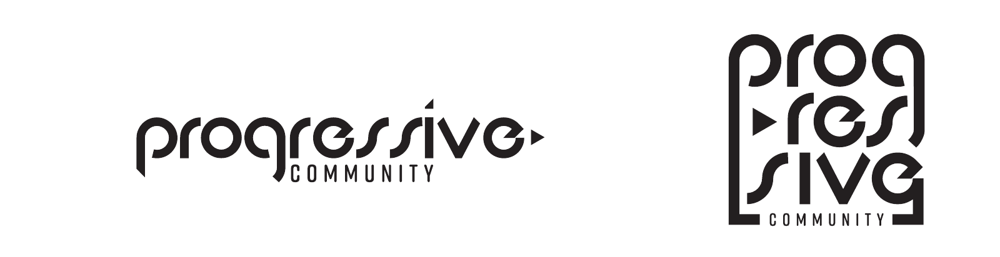
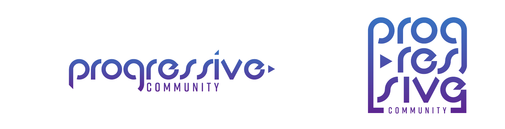
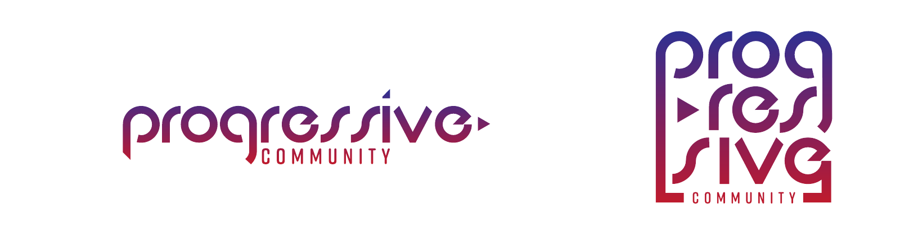
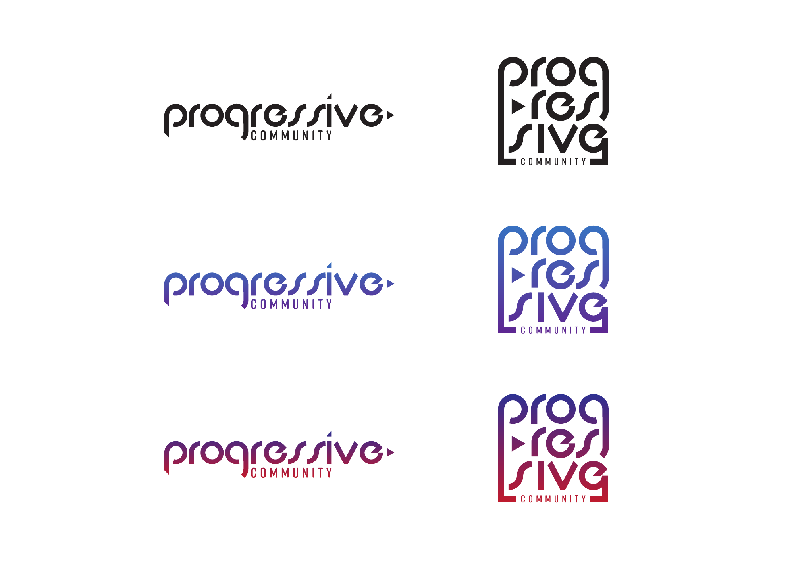
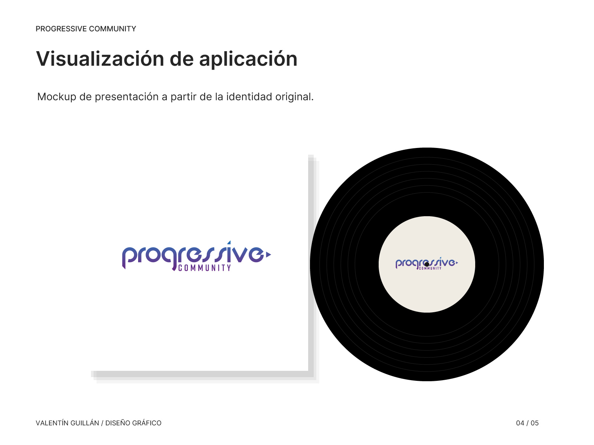

Todos los proyectos
Diseño de logo · Música electrónica
Progressive Community
Diseño de logo para una marca de música electrónica.
Explorar el proyectoEl proyecto
Un nombre,
dos composiciones.
El nombre combina formas redondeadas y cortes geométricos. La versión horizontal y la versión apilada mantienen el nombre y el descriptor Community.
- Cliente
- Progressive Community
- Diseño
- Valentín Guillán
- Participación
- Diseño de logo
Desarrollo visual
Dos composiciones
La versión horizontal y la versión apilada mantienen el nombre y el descriptor.

Desarrollo visual
Alternativas de color
Degradado azul a violeta y degradado violeta a rojo del archivo original.


Desarrollo visual
La selección completa
Las composiciones y alternativas de color, tal como aparecen en la lámina original.

Visualización de aplicación: Progressive Community

Participación y créditos
Progressive Community
Diseño de logo: Valentín Guillán.